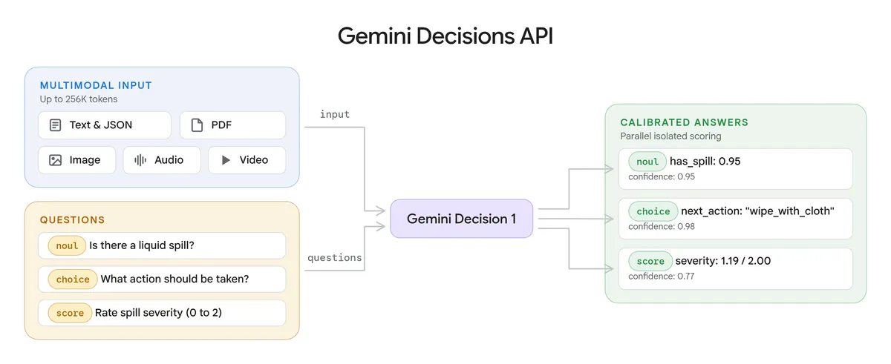
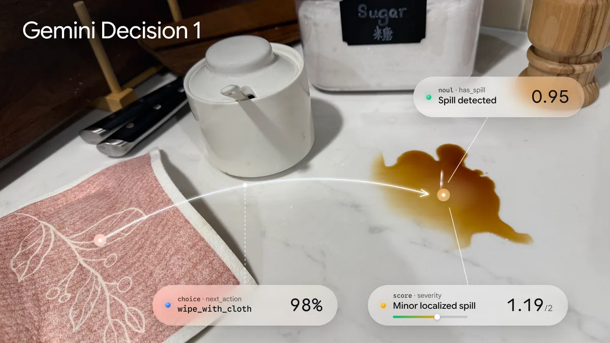
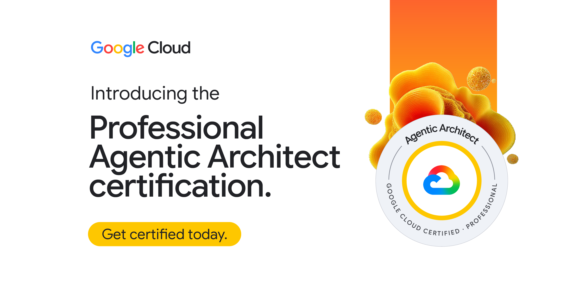
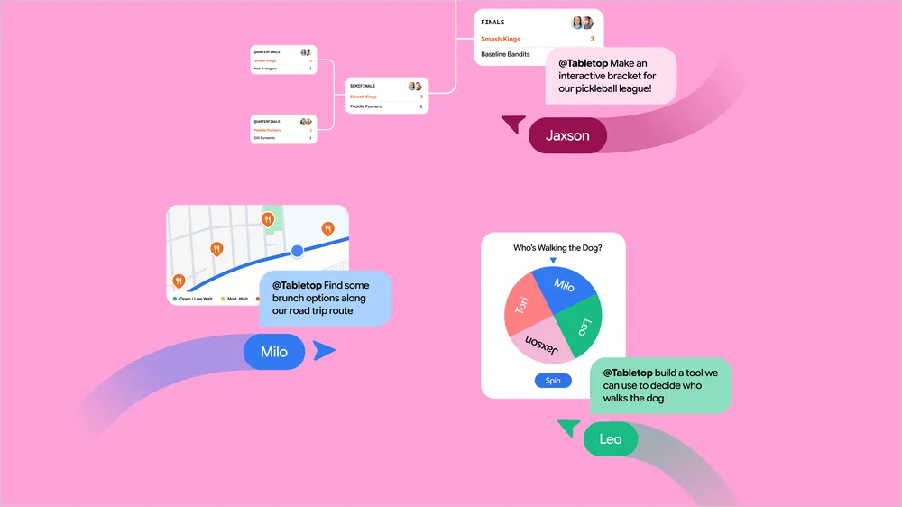

AI NEWS ISSUE 45
Gemini Decision 1,답변 대신 선택지를 평가한다
Google의 판단 전용 모델이 나왔습니다. CloudSEK이 공개한 에이전트 악용 기록, Google의 에이전트 설계 인증과 Tabletop 협업 실험을 함께 살펴봅니다.
AT A GLANCE
30초 요약
- Gemini Decision 1 미리 정한 선택지를 평가하는 전용 모델입니다. 빠른 판단과 낮은 호출 비용을 내세우지만, 모델의 확신과 실제 실행 권한은 따로 다뤄야 합니다.
- CloudSEK 중앙아시아 사이버 첩보 활동에서 에이전트를 활용한 기록을 공개했습니다. 조사 발표는 11월 11일, 확보한 활동 기록은 4~10월에 걸쳐 있습니다.
- Google Cloud·Labs 에이전트 설계와 실습을 함께 평가하는 인증을 소개했고, Tabletop은 여럿이 쓸 작은 도구를 만드는 실험을 시작했습니다. Tabletop은 미국의 18세 이상 사용자에게 대기 신청을 받고 있습니다.
자료 확인 2026년 11월 12일 한국시간 기준입니다. 각 원문의 11월 11~12일 공개 자료를 바탕으로 썼으며, 아래 성능 수치는 Google의 자체 발표입니다.
01 / GOOGLE DEEPMIND
긴 답을 쓰기 전에,
필요한 선택부터 합니다
Google이 Gemini Decision 1과 Gemini Decisions API를 공개했습니다. 도구 선택이나 문의 분류처럼 후보가 정해진 문제에서, 문장을 순서대로 생성하는 대신 후보들을 한 번의 추론으로 평가합니다. Google AI Studio의 Gemini API로 제공하며, Google Cloud에서도 제공할 예정이라고 밝혔습니다. 공식 발표 ↗
“받은 머그컵에 금이 갔어요”라는 문의라면 필요한 것은 긴 설명보다 ‘배송 지연·상품 파손·사용법 문의 중 어디로 보낼지’일 수 있습니다. 이 API는 그런 판단을 따로 맡길 수 있게 합니다. 텍스트·이미지·음성·영상·PDF를 입력하고, 하나의 자료에 서로 독립적인 질문을 최대 1,000개까지 적용할 수 있습니다.

| 질문 유형 | 업무 예시 | 반환하는 값 |
|---|---|---|
| Yes/No | 파손을 신고했나요? | ‘예’일 확률과 답의 신뢰도 |
| Choice | 어떤 문의 유형인가요? | 선택 항목, 후보별 확률과 신뢰도 |
| Score | 정해 둔 심각도 기준에서 어느 수준인가요? | 등급별 확률로 계산한 점수와 신뢰도 |
점수와 신뢰도는 같은 값이 아닙니다. 예를 들어 심각도를 0~2로 정했다면 점수는 그 범위에서 나오고, 신뢰도는 0~1로 나옵니다. Google은 신뢰도를 가장 가능성이 높은 답이 맞을 것으로 추정한 확률이라고 설명하며, 정답을 확인한 업무 데이터로 보류 기준을 정하라고 권합니다. 값·확률·신뢰도의 구분 ↗

입력은 256K까지, 속도 측정은 16K 이하에서
- 요청부터 응답까지 걸린 시간
- 150~250밀리초 · Google 자체 측정
- 유료 입력 100만 토큰
- $0.10출력 토큰은 발생하지 않음
- 공유 입력의 최대 길이
- 256K토큰 · 속도 측정 길이와 다름
Google이 발표한 응답시간은 입력이 최대 16K 토큰일 때의 측정값입니다. 한 번에 질문 1~100개를 넣었을 때 응답시간이 거의 같았다고 설명합니다. 최대 입력·최대 질문 수에서도 같은 속도를 보장하는 수치는 아닙니다.
같은 평가 과제에서는 Gemini 3.5 Flash-Lite를 Interactions API로 호출한 경우보다 비용이 약 5분의 1이었다고 밝혔습니다. Gemini Notebook에서 요청을 알맞은 처리 경로로 보내는 데도 사용해 일상 질문의 응답시간을 최대 40% 줄였다고 합니다. 둘 다 Google의 적용·평가 결과이며, 우리 업무에서는 오분류와 재처리까지 포함해 비교해야 합니다.
요금표에 따르면 공유 입력에는 요청당 한 번 요금을 매기고, 각 질문의 지침·평가 기준에 쓰인 토큰은 추가로 계산합니다. 무료 구간도 제공하지만 Batch API와 문맥 캐시는 지원하지 않습니다. 질문을 많이 묶어도 비용이 완전히 같아지는 구조는 아닙니다. 공식 요금표 ↗
커머스에서는 이 모델로 문의 유형을 분류하고, 취소 가능 여부와 환불 금액은 업무 서비스가 확인하도록 설계할 수 있습니다. 모델이 ‘취소’라고 확신해도 주문의 소유자와 현재 배송 상태를 확인하는 절차는 그대로 필요합니다.
02 / CLOUDSEK
공격자의 작업을 도운
에이전트와 실행 도구
CloudSEK은 외부에 노출된 서버에서 Silent Lynx 운영자의 도구·침입 자료·에이전트 대화 기록을 발견했다고 발표했습니다. 연구진은 서버와 Silent Lynx의 연결은 신뢰도 ‘높음’, 카자흐스탄과의 관련성은 ‘중간’으로 평가했습니다. 이 평가만으로 국가의 지시가 확인된 것은 아닙니다. CloudSEK 조사 원문 ↗
- 2026년 4~10월확보한 도구와 침입·에이전트 대화 기록의 기간
- 2026년 11월 11일CloudSEK이 조사 결과를 공개한 날짜
보고서에는 공격자가 Hermes 에이전트에 작업을 지시한 대화와 정찰·자료 수집·기록 삭제에 활용한 흔적이 담겼습니다. 공격자가 의도적으로 에이전트를 동원한 사례입니다.
- 01 · 공격자가 지시대화로 작업을 맡기고 에이전트에 침투 테스트 전문가 역할을 부여했습니다.
- 02 · Hermes가 작업을 관리주로 DeepSeek 모델을 사용하고, 메모리·작업 목록·정기 실행 기능을 활용했습니다.
- 03 · 도구로 작업 실행터미널·브라우저 등의 도구로 정찰, 자료 수집과 기록 삭제를 지원했습니다.
| 설정 | CloudSEK이 확인한 내용 |
|---|---|
| 명령 실행 허용 | 일부 파괴적 명령을 추가 확인 없이 실행하도록 미리 허용했습니다. |
| 반복 실패 시 중단 | 도구 호출이 반복해서 실패하면 멈추는 제한을 꺼 두었습니다. |
타지키스탄 정부 문서 시스템에서는 국방부로 보내거나 국방부를 경유한 서로 다른 문서가 2,000건 넘게 수집됐다고 연구진은 설명합니다. 이는 연구진이 확인한 수집 문서의 수이며, 에이전트가 단독으로 탈취한 문서 수를 뜻하지는 않습니다. 이 글에서는 연구진의 공개 분석을 확인했으며 피해 시스템을 직접 조사하지 않았습니다.
모델이 올바르게 판단했는지와 계정에 실행 권한이 있는지는 따로 확인해야 합니다.
권한 문제는 공격자 쪽 도구 설정에만 있지 않았습니다. 보고서는 탈취한 일반 직원 계정이 소속 범위를 벗어난 문서에 접근했으며, 운영자 메모에 문서별 권한 검사의 허점이 기록돼 있었다고 설명합니다. 우리 업무에서는 에이전트에 맡길 계정을 제한하는 일과, 서비스를 호출한 계정이 해당 데이터에 접근해도 되는지 검사하는 일을 함께 봐야 합니다. 상품 조회와 환불 권한을 나누고 변경 API에서 주문 소유자·처리 상태를 확인하는 것이 그 예입니다. 우리 업무에 적용한다면 이런 접근 통제부터 점검할 수 있겠습니다.
03 / GOOGLE CLOUD
설계를 설명하고,
직접 만들어 검증하는 인증
Google Cloud가 Professional Agentic Architect 인증을 소개했습니다. 지난 4개월 동안 자사 FDE와 전략 파트너 수천 명의 교육에 쓴 과정을 일반 개발자와 파트너에게도 공개한다는 설명입니다. FDE는 고객 환경에 들어가 문제를 파악하고 해결책을 구현하는 엔지니어를 가리킵니다. 발표 원문 ↗

- 01 · 감독관이 있는 객관식 시험시스템을 어떻게 설계하고 어떤 기술 기준을 적용하는지 평가합니다.
- 02 · Google Skills 실습객관식 합격 뒤 안내를 받아 코드를 작성하고 실제로 작동시키는 능력을 검증합니다.
평가 범위에는 로우코드 에이전트 제작, 코딩 에이전트 활용, 커스텀 에이전트 개발, 워크플로 평가·배포, 보안·거버넌스가 들어갑니다. 코딩 에이전트를 개발에 활용하는 능력과 운영할 에이전트를 직접 설계하는 능력을 각각 평가합니다.
11월 12일 확인한 영문 시험 안내에는 시험 시간 2시간, 객관식 50~60문항, 응시 언어 영어, 등록비 200달러(해당 세금 별도)가 명시돼 있습니다. 한국어 페이지에는 베타 시험 정보가 남아 있어 세부 조건은 영문 안내를 따랐습니다. GEAR의 월 35개 무료 크레딧은 Google Skills 학습용 혜택입니다. 현재 영문 시험 안내 ↗
팀에서는 이 평가 범위를 참고해, 한 업무의 입력부터 오류 처리까지 구현하는 과제를 만들 수 있겠습니다. 모델을 연결하는 방법과 함께 데이터 접근 범위와 결과 검증 방법까지 설명해 보는 것입니다.
04 / GOOGLE LABS
함께 쓸 도구를
대화로 만듭니다
Google Labs는 실시간으로 도구를 함께 만들고 사용할 수 있는 실험 서비스 Tabletop을 공개했습니다. 링크·파일·아이디어를 넣고 요청하거나 템플릿을 고르면 일정표, 투표, 비용 분담 도구, 대진표 같은 작은 도구를 만들고 초대 링크로 함께 쓸 수 있다는 설명입니다. 공식 소개 ↗

현재는 미국의 18세 이상 사용자를 대상으로 대기 신청을 받아 순차적으로 제공합니다. 국내에서 바로 사용할 수 있는 정식 서비스로 소개하기에는 이릅니다.
모임의 점심 메뉴 투표나 행사 준비 현황처럼 잠시 쓰는 협업 도구를 떠올려 볼 수 있습니다. 필요한 화면을 바로 만들면 문서 여러 장을 오가며 취합하는 일을 줄일 여지가 있습니다. 실제 주문·결제와 연결할 때는 업무 시스템의 접근 권한, 입력 검증, 중복 요청 처리까지 확인해야 합니다. 이런 업무 활용은 공개된 기능에서 떠올려 본 제안이며, 직접 적용해 본 결과는 아닙니다.
OUR VIEW
판단은 모델에 맡기고,
실행 권한은 코드로 확인합니다
Gemini의 새 API는 선택이 필요한 단계에 판단 기능을 넣는 접근입니다. CloudSEK 사례는 공격자가 에이전트를 동원한 과정과 피해 시스템의 접근 통제 문제를 보여줍니다. 우리 업무에서도 모델의 선택이 곧 실행 허가가 되지 않도록 설계해야 합니다.
Google의 인증은 이런 시스템을 설계하고 검증할 개발자의 역량을 다룹니다. Tabletop은 여러 사람이 함께 사용할 도구를 만드는 데 초점을 맞췄습니다.
Workless Engineering의 성과를 보려면 응답 속도와 함께 사람이 문의를 다시 분류하거나 잘못된 처리를 되돌리는 횟수가 얼마나 줄었는지도 확인해야 합니다. 모델을 바꾸더라도 업무 분류 기준과 권한 검사, 실패 기록은 계속 활용할 수 있어야 합니다.
OUR LAB · 아직 실행하지 않은 실험 제안
분류 점수가 높으면,
그대로 맡겨도 될까요
가상 문의 “머그컵이 깨져 왔어요. 교환 방법을 알려 주세요”를 파손·배송 지연·사용법·추가 확인 중 하나로 보냅니다. “상자가 찌그러졌는데 아직 열어 보지는 않았어요”는 상품 파손으로 단정하지 않고 추가 확인으로 보내야 합니다. 이 차이를 놓치면 빨리 분류해도 담당자가 다시 읽어야 합니다.
이번에는 분류 확률에 보류 기준을 두면, 오분류를 줄이면서 얼마나 많은 문의를 담당자에게 자동으로 전달할 수 있는지 확인합니다. 자동 전달은 접수 단계까지만 뜻하며 문의 해결이나 환불 완료를 뜻하지 않습니다. 앞선 규칙 기반 모델 선택 실험에 이어, 이번에는 같은 모델이 내놓은 확률과 실제 정답의 관계를 봅니다.
- 01 · 모델이 분류문의 본문과 네 선택지를 입력해 항목별 확률을 받습니다.
- 02 · 코드가 보류 판단가장 높은 확률이 기준보다 낮거나 ‘추가 확인’이면 검토 대상으로 정합니다.
- 03 · 모의 접수서버가 접수 권한을 확인한 뒤 담당자 배정 또는 검토 대기로 기록합니다.
| 상황 | 판단·확인 | 기대 결과 |
|---|---|---|
| 명확한 파손 | ‘파손’ 0.96, 전달 권한 있음 | 파손 문의 담당자에게 1건 배정 |
| 내용이 모호함 | ‘파손’ 0.64 | 자동 전달 0건, 검토 필요 |
| 추가 확인으로 분류 | ‘추가 확인’ 0.97 | 높은 점수여도 검토 필요 |
| 권한 없음 | ‘파손’ 0.96, 전달 권한 없음 | 서버 거절, 접수 0건 |
같은 모델 응답으로 두 가지 전달 방식을 비교합니다
가상 문의 80건 중 20건은 지침·보류 기준 조정에, 나머지 60건은 최종 평가에 씁니다. 정보가 부족하거나 여러 문의 유형이 섞인 경우, 파손·배송 지연·사용법 중 어디에도 속하지 않는 경우는 ‘추가 확인’으로 정합니다. 평가용은 네 유형 각 15건으로 준비하고, 같은 상황을 조금씩 바꾼 문장들은 한쪽에만 넣어 비슷한 사례가 조정용과 평가용에 함께 들어가지 않게 합니다. 평가 전에 사람들이 검토해 합의한 정답을 정해 둡니다.
A는 확률이 가장 높은 문의 유형에 따라 전달하고, B는 같은 응답에 보류 기준을 추가합니다. ‘추가 확인’은 두 방식 모두 검토로 보냅니다. 두 방식은 같은 모델과 권한 검사를 사용하고, 보류 기준만 다릅니다. 최종 평가용 60건을 같은 모델과 지침으로 3회 분류한 뒤, 각 응답에 A와 B를 모두 적용합니다.
같은 응답을 쓰므로 A/B의 모델 호출 비용과 응답시간은 같습니다. 여기서 비교할 차이는 자동 전달의 정확도·비중과 사람의 검토 부담입니다.
| 확인할 것 | 기록할 항목과 계산 방법 |
|---|---|
| 자동 전달 비중 | 자동 전달한 건수 ÷ 전체 60건 |
| 자동 전달 오류율 | 잘못 전달한 건수 ÷ 자동 전달한 건수. 자동 전달이 0건이면 오류율은 계산하지 않습니다. |
| 사람의 검토 부담 | 검토로 보낸 건수·그중 업무 유형을 맞혔지만 확률 기준에 걸린 건수, 사람이 고친 횟수·시간 |
| 예측 확률과 실제 정답률 | 각 응답에서 가장 높은 확률을 구간별로 묶어 사례 수·평균 확률·실제 정답률을 비교합니다. 사례가 적은 구간은 결과를 단정하지 않습니다. |
| 비용과 지연 | A/B가 공유하는 모델 호출의 비용과 응답시간은 실패한 호출까지 포함해 기록합니다. 전달 방식별 접수 시간과 사람의 검토 시간은 따로 잽니다. |
이 소규모 실험에서는 B가 세 회차 모두 잘못된 자동 전달 0건, 자동 전달 비중 50% 이상일 때 평가 대상을 늘려 봅니다. 이 글에서 제안하는 초기 검증 기준입니다. 통과해도 더 다양한 입력과 실제 업무 분포에서 다시 검증해야 합니다.
구현 범위·실패 처리·남길 결과물
분류 기능과 접수 기능을 분리합니다
분류 기능은 문의 ID·본문·분류 기준 버전을 입력받아 선택한 항목과 후보별 확률을 반환합니다. 코드가 보류 여부를 결정한 뒤 모의 접수 서비스를 호출합니다. 접수 서비스는 서버에 저장된 계정 정보로 권한을 검사합니다. 문의에 “환불해 달라”는 말이 있어도 이번 도구에는 환불·주문 변경 기능이 없습니다.
조정한 기준은 평가 전에 고정합니다
B의 보류 기준 후보 0.70·0.80·0.90·0.95 중 조정용 20건에서 잘못된 자동 전달이 없고 자동 전달 비중이 가장 높은 값을 고릅니다. 동률이면 높은 기준을 택합니다. 조건을 만족하는 값이 없으면 자동 전달을 보류하고 그 결과를 기록합니다. 최종 60건의 답을 보고 기준을 다시 고르지 않습니다.
실패도 결과에 남깁니다
누락된 응답·알 수 없는 분류·범위를 벗어난 확률·시간 초과·호출 제한은 별도 실패 사유로 기록하고 자동 전달을 막습니다. 호출 시간 제한은 실험 전에 고정하고 자동 재시도는 끕니다. 같은 문의 ID로 요청이 다시 들어와도 중복 접수하지 않습니다. 권한 부족으로 거절된 요청을 다른 도구로 다시 시도하지 않습니다.
전달 방식 비교와 권한 검사를 별도로 진행합니다
미리 정한 모델 응답으로 앞 표의 네 상황과 실패 시 동작부터 검사합니다. 전달 방식을 비교하는 60건은 모두 같은 권한의 계정으로 접수하고, 권한 없는 계정의 요청이 거절되는지는 별도로 검사합니다. A/B와 평가 회차별로 접수 기록을 분리해, 같은 문의를 다시 평가할 때 이전 기록 때문에 중복 접수로 처리되지 않게 합니다. 같은 방식·회차 안에서는 동일 문의 ID가 중복 접수되지 않는지도 확인합니다.
다음 변경에도 다시 확인할 수 있게 남깁니다
입력·정답·지침·모델·보류 기준의 버전, 모델의 원래 응답, A/B 판정, 서버 기록과 집계표를 묶습니다. 60건을 3회씩 총 180번 평가하지만, 서로 다른 문의는 60건입니다. 검토자에게 A/B 중 어느 방식인지 알리지 않고 순서를 섞어 배정합니다. 같은 문의를 본 경험이 평가에 영향을 주지 않도록 한 사람이 같은 문의를 두 번 검토하지 않게 합니다.
결과물은 자동으로 전달할 문의와 사람이 검토할 문의를 정리한 기준표가 됩니다. 모델을 바꿀 때는 보류 기준도 다시 조정한 뒤 같은 평가 입력과 권한 검사로 비교합니다.
읽은 자료
- Google · Gemini Decisions API 발표 11월 11일 · 기능, 측정 조건, 자사 제품 활용과 공식 이미지
- Google AI Studio · Decisions API 문서 11월 12일 확인 · 질문 유형, 독립 평가, 확률과 신뢰도
- Google AI Studio · Gemini Decision 요금 11월 12일 확인 · 공유 입력 과금, 무료 구간과 지원 범위
- Google AI Studio · API 출시 기록 11월 11일 · 모델과 API 공개 기록
- CloudSEK · Silent Lynx 노출 서버 조사 11월 11일 공개 · 4~10월 기록, 에이전트 설정과 공격 조직 추정 근거
- Google Cloud · Agentic Architect 인증 발표 11월 12일 표시 · 교육 배경, 평가 영역과 공식 소개 이미지
- Google Cloud · 한국어 인증 안내 · 현재 영문 안내 11월 12일 확인 · 한국어의 베타 정보와 영문 시험 조건을 구분
- Google Labs · Tabletop 소개 11월 11일 · 협업 예시, 공식 화면과 미국 제공 조건
제품 이미지·구조도·영상은 Google 제공 자료입니다. CloudSEK 사건 연표·에이전트 작업 구조와 Google 인증 절차는 각 원문을 바탕으로 만든 설명 자료입니다. 문의 분류 도식과 예시 표는 이 글에서 제안한 실험을 설명하기 위해 만들었으며, 실제 평가 결과가 아닙니다.